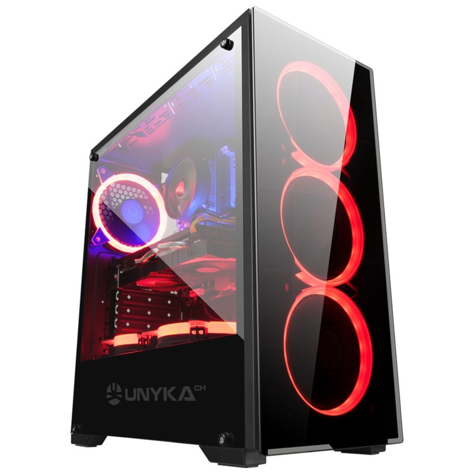

NVIDIA GeForce GTX 1050 Ti 4GB GDDR5 Video Card | 8GB Gaming Memory DDR4 2400 con Heat Spreader | Windows 10 Home 64-bit
PCIe AC Wi-Fi con antena | sin bloatware | 1 x DVI, 1 x puerto de pantalla (versión 1.4) | 1 x HDMI | 4 x puertos USB 3.1 Gen1 (4 x USB 2.0, 1 x USB 3.0 | HD Audio y micrófono
3 ventiladores LED rojos frontales de 4.724 in para un máximo flujo de aire, 1 ventilador trasero sin LED de 4.724 in, 1 disipador de calor LED rojo Cooler Master CPU para refrigeración extrema (no disipador de calor de stock), alimentado por fuente de alimentación 80 Plus certificada de 500 W.
SkyTech Blaze II Gaming PC Desktop- $2500

SkyTech Blaze II Gaming PC Desktop - Ryzen 5 2600 6-Core 3.4 GHz, NVIDIA GeForce GTX 1660 TI 6G, 500G SSD, 8GB DDR4, RGB, AC WiFi, Windows 10 Home 64-bit
SkyTech Blaze II Gaming PC Desktop
Procesador de CPU Ryzen 5 2600 6 núcleos 3,4 GHz (3,9 GHz Max Boost) | SSD de 500 G – hasta 30 veces más rápido que el disco duro tradicional | Placa base A320M
Tarjeta de vídeo NVIDIA GeForce GTX 1660 TI 6 GB GDDR6 | 8 GB de memoria para juegos DDR4 3000 con disipador de calor | Windows 10 Home 64 bits
PCIe AC Wi-Fi con antena | sin bloatware | 1 x HDMI, 1 x D-Sub, 1 x DVD-D | 4 x puertos USB 3.1 Gen1, 2 x USB 2.0 | Audio HD y micrófono | teclado y ratón RGB gratis
3 ventiladores de anillo RGB para un máximo flujo de aire. Alimentado por fuente de alimentación 80 Plus certificada de 500 W. Caja de cristal templado Skytech mATX Mid-Tower.
AMD Ryzen 5 3600 6-Core 12-Thread 3.6GHz (4.2 GHz Max Boost) CPU | 500GB SSD – Up to 30x faster than traditional HDD | B450 Motherboard
GeForce GTX 1660 6GB GDDR5 Graphics Card (Brand May Varies) | 8GB DDR4 3000MHz Gaming Memory with Heat Spreaders | Windows 10 Home 64-bit | AMD High Performance Wraith Cooler
802.11AC Wi-Fi | No Bloatware | 3 x DisplayPort 1.4, 1 x HDMI | HD Audio and Mic | Free Gaming Keyboard and Mouse | 2 x USB 3.0, 2 x USB 2.0, 4 x USB 3.2 Gen1
3 x RGB RING Fans for Maximum Air Flow | Powered by 80 Plus Certified 500 Watt Power Supply | Skytech Archangel Gaming Case with Tempered Glass - White